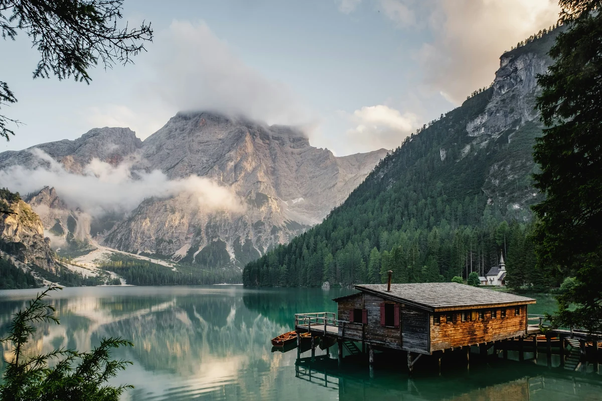
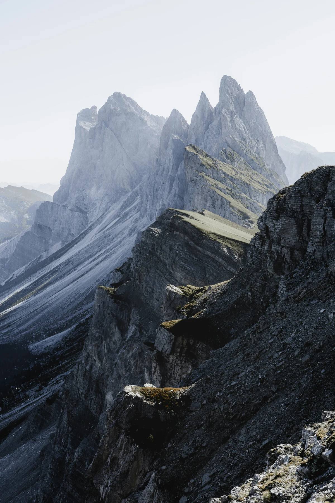
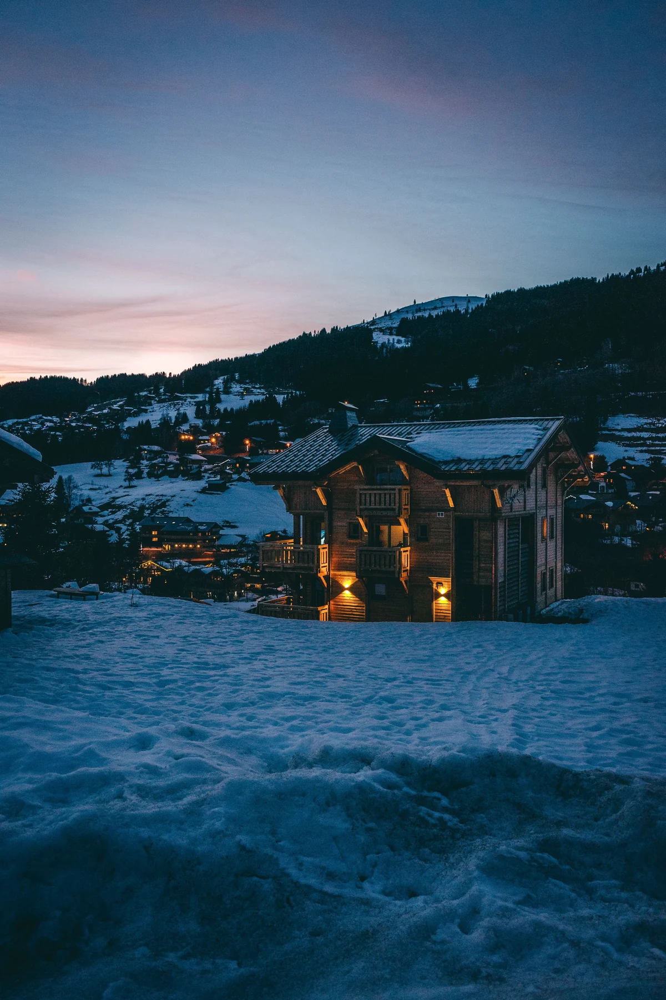
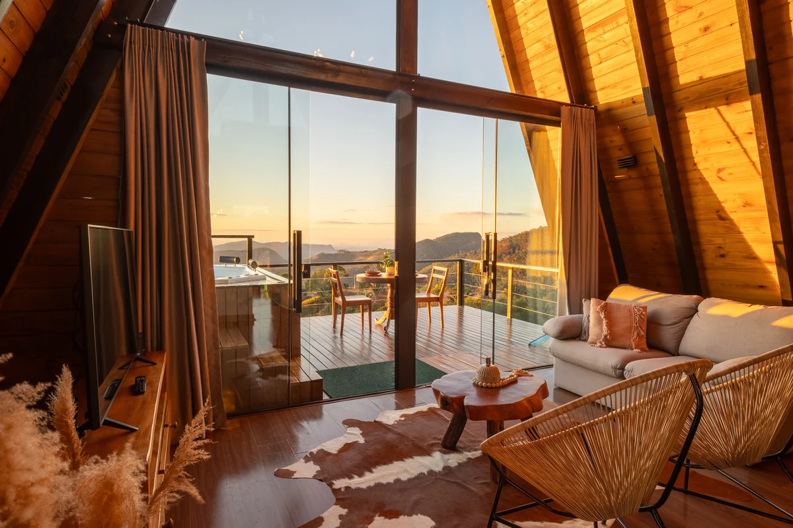

ALPINE SANCTUARY
COLLECTION / 01
COLLECTION / 01
Свой мир.
Выше.
Частные горные резиденцииВыше повседневности.
01 — МестоДругой масштаб жизни
THE ART OF BEING AWAY
Высота
меняет всё.
Меньше шума.Больше себя.

ПРОСТРАНСТВО ДЛЯ ГЛАВНОГОТепло внутри. Мир снаружи.
Оставить мир
внизу. Найти
свой ритм.
Утро начинается со света на вершинах. День не просит спешить. Вечер возвращает к простым вещам: тёплому дереву, огню и людям рядом.
Архитектура ощущений
NIVAL / A PRIVATE WORLD
Природа задаёт масштаб.
Архитектура даёт ему форму.
02 — АрхитектураДЕРЕВО. КАМЕНЬ. СВЕТ.
Архитектура NIVAL
IБлиже
Ближе
к природе.
Честные материалы. Тёплый свет. Дом, который становится частью пейзажа.
03 — КоллекцияТри способа быть здесь
Личное.
Пространство.
Выберите свой масштаб.
Остальное — за горизонтом.

COLLECTION / THREE PRIVATE WORLDSТишина для двоих
Скала
112м² пространства
1спальня
38м² террасы
04 — В СВОЁМ РИТМЕ
Без лишнего.
Без границ.
Самая большая роскошь —
свобода быть здесь.